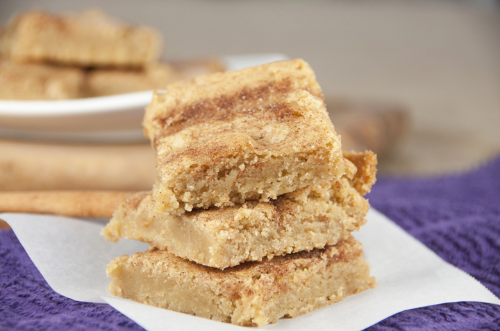

Snickerdoodle Blondies
Prep : 15 min | Bake : 25-30 min
--------------------------------------------------------
Ingredient List:
3/4 Cup Butter (softened)
1 Cup White Sugar
1/2 Cup Brown Sugar
2 Eggs
2 tsp Vanilla Extract
2 Cups All Purpose Flour
1 tsp Cinnamon
3/4 tsp Baking Powder
1/2 tsp Salt
2 TB Cinnamon Sugar
Instructions:
1.) Preheat oven to 350 degrees.
2.) Combine ingredients and pour into greased pan. Sprinkle top with sugar and cinnamon.
3.) Bake until golden for 25-30 minutes.
4.) Let cool before slicing into squares.